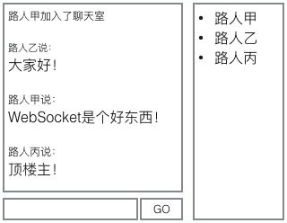
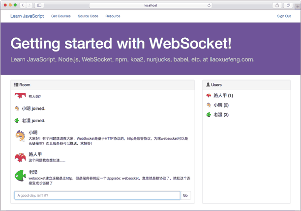

编写聊天室
上一节我们用ws模块创建了一个WebSocket应用。但是它只能简单地响应ECHO: xxx消息，还属于Hello, world级别的应用。
要创建真正的WebSocket应用，首先，得有一个基于MVC的Web应用，也就是我们在前面用koa2和Nunjucks创建的Web，在此基础上，把WebSocket添加进来，才算完整。
因此，本节的目标是基于WebSocket创建一个在线聊天室。
首先，我们把前面编写的MVC工程复制一份，先创建一个完整的MVC的Web应用，结构如下：
ws-with-koa/
|
+- .vscode/
| |
| +- launch.json <-- VSCode 配置文件
|
+- controllers/ <-- Controller
|
+- views/ <-- html模板文件
|
+- static/ <-- 静态资源文件
|
+- app.js <-- 使用koa的js
|
+- start.js <-- 启动入口js
|
+- controller.js <-- 扫描注册Controller
|
+- static-files.js <-- 处理静态文件
|
+- templating.js <-- 模版引擎入口
|
+- package.json <-- 项目描述文件
|
+- node_modules/ <-- npm安装的所有依赖包
然后，把我们需要的依赖包添加到package.json：
"dependencies": {
"babel-core": "6.13.2",
"babel-polyfill": "6.13.0",
"babel-preset-es2015-node6": "0.3.0",
"babel-preset-stage-3": "6.5.0",
"ws": "1.1.1",
"koa": "2.0.0",
"koa-bodyparser": "3.2.0",
"koa-router": "7.0.0",
"nunjucks": "2.4.2",
"mime": "1.3.4",
"mz": "2.4.0"
}
使用npm install安装后，我们首先得到了一个标准的基于MVC的koa2应用。该应用的核心是一个代表koa应用的app变量：
const app = new Koa();
// TODO: app.use(...);
app.listen(3000);
现在第一个问题来了：koa通过3000端口响应HTTP，我们要新加的WebSocketServer还能否使用3000端口？
答案是肯定的。虽然WebSocketServer可以使用别的端口，但是，统一端口有个最大的好处：
实际应用中，HTTP和WebSocket都使用标准的80和443端口，不需要暴露新的端口，也不需要修改防火墙规则。
在3000端口被koa占用后，WebSocketServer如何使用该端口？
实际上，3000端口并非由koa监听，而是koa调用Node标准的http模块创建的http.Server监听的。koa只是把响应函数注册到该http.Server中了。类似的，WebSocketServer也可以把自己的响应函数注册到http.Server中，这样，同一个端口，根据协议，可以分别由koa和ws处理：

把WebSocketServer绑定到同一个端口的关键代码是先获取koa创建的http.Server的引用，再根据http.Server创建WebSocketServer：
// koa app的listen()方法返回http.Server:
let server = app.listen(3000);
// 创建WebSocketServer:
let wss = new WebSocketServer({
server: server
});
要始终注意，浏览器创建WebSocket时发送的仍然是标准的HTTP请求。无论是WebSocket请求，还是普通HTTP请求，都会被http.Server处理。具体的处理方式则是由koa和WebSocketServer注入的回调函数实现的。WebSocketServer会首先判断请求是不是WS请求，如果是，它将处理该请求，如果不是，该请求仍由koa处理。
所以，WS请求会直接由WebSocketServer处理，它根本不会经过koa，koa的任何middleware都没有机会处理该请求。
现在第二个问题来了：在koa应用中，可以很容易地认证用户，例如，通过session或者cookie，但是，在响应WebSocket请求时，如何识别用户身份？
一个简单可行的方案是把用户登录后的身份写入Cookie，在koa中，可以使用middleware解析Cookie，把用户绑定到ctx.state.user上。
WS请求也是标准的HTTP请求，所以，服务器也会把Cookie发送过来，这样，我们在用WebSocketServer处理WS请求时，就可以根据Cookie识别用户身份。
先把识别用户身份的逻辑提取为一个单独的函数：
function parseUser(obj) {
if (!obj) {
return;
}
console.log('try parse: ' + obj);
let s = '';
if (typeof obj === 'string') {
s = obj;
} else if (obj.headers) {
let cookies = new Cookies(obj, null);
s = cookies.get('name');
}
if (s) {
try {
let user = JSON.parse(Buffer.from(s, 'base64').toString());
console.log(`User: ${user.name}, ID: ${user.id}`);
return user;
} catch (e) {
// ignore
}
}
}
注意：出于演示目的，该Cookie并没有作Hash处理，实际上它就是一个JSON字符串。
在koa的middleware中，我们很容易识别用户：
app.use(async (ctx, next) => {
ctx.state.user = parseUser(ctx.cookies.get('name') || '');
await next();
});
在WebSocketServer中，就需要响应connection事件，然后识别用户：
wss.on('connection', function (ws) {
// ws.upgradeReq是一个request对象:
let user = parseUser(ws.upgradeReq);
if (!user) {
// Cookie不存在或无效，直接关闭WebSocket:
ws.close(4001, 'Invalid user');
}
// 识别成功，把user绑定到该WebSocket对象:
ws.user = user;
// 绑定WebSocketServer对象:
ws.wss = wss;
});
紧接着，我们要对每个创建成功的WebSocket绑定message、close、error等事件处理函数。对于聊天应用来说，每收到一条消息，就需要把该消息广播到所有WebSocket连接上。
先为wss对象添加一个broadcase()方法：
wss.broadcast = function (data) {
wss.clients.forEach(function (client) {
client.send(data);
});
};
在某个WebSocket收到消息后，就可以调用wss.broadcast()进行广播了：
ws.on('message', function (message) {
console.log(message);
if (message && message.trim()) {
let msg = createMessage('chat', this.user, message.trim());
this.wss.broadcast(msg);
}
});
消息有很多类型，不一定是聊天的消息，还可以有获取用户列表、用户加入、用户退出等多种消息。所以我们用createMessage()创建一个JSON格式的字符串，发送给浏览器，浏览器端的JavaScript就可以直接使用：
// 消息ID:
var messageIndex = 0;
function createMessage(type, user, data) {
messageIndex ++;
return JSON.stringify({
id: messageIndex,
type: type,
user: user,
data: data
});
}
编写页面
相比服务器端的代码，页面的JavaScript代码会更复杂。
聊天室页面可以划分为左侧会话列表和右侧用户列表两部分：

这里的DOM需要动态更新，因此，状态管理是页面逻辑的核心。
为了简化状态管理，我们用Vue控制左右两个列表：
var vmMessageList = new Vue({
el: '#message-list',
data: {
messages: []
}
});
var vmUserList = new Vue({
el: '#user-list',
data: {
users: []
}
});
会话列表和用户列表初始化为空数组。
紧接着，创建WebSocket连接，响应服务器消息，并且更新会话列表和用户列表：
var ws = new WebSocket('ws://localhost:3000/ws/chat');
ws.onmessage = function(event) {
var data = event.data;
console.log(data);
var msg = JSON.parse(data);
if (msg.type === 'list') {
vmUserList.users = msg.data;
} else if (msg.type === 'join') {
addToUserList(vmUserList.users, msg.user);
addMessage(vmMessageList.messages, msg);
} else if (msg.type === 'left') {
removeFromUserList(vmUserList.users, msg.user);
addMessage(vmMessageList.messages, msg);
} else if (msg.type === 'chat') {
addMessage(vmMessageList.messages, msg);
}
};
这样，JavaScript负责更新状态，Vue负责根据状态刷新DOM。以用户列表为例，HTML代码如下：
<div id="user-list">
<div class="media" v-for="user in users">
<div class="media-left">
<img class="media-object" src="/static/user.png">
</div>
<div class="media-body">
<h4 class="media-heading" v-text="user.name"></h4>
</div>
</div>
</div>
测试的时候，如果在本机测试，需要同时用几个不同的浏览器，这样Cookie互不干扰。
最终的聊天室效果如下：

配置反向代理
如果网站配置了反向代理，例如Nginx，则HTTP和WebSocket都必须通过反向代理连接Node服务器。HTTP的反向代理非常简单，但是要正常连接WebSocket，代理服务器必须支持WebSocket协议。
我们以Nginx为例，编写一个简单的反向代理配置文件。
详细的配置可以参考Nginx的官方博客：Using NGINX as a WebSocket Proxy
首先要保证Nginx版本>=1.3，然后，通过proxy_set_header指令，设定：
proxy_set_header Upgrade $http_upgrade;
proxy_set_header Connection "upgrade";
Nginx即可理解该连接将使用WebSocket协议。
一个示例配置文件内容如下：
server {
listen 80;
server_name localhost;
# 处理静态资源文件:
location ^~ /static/ {
root /path/to/ws-with-koa;
}
# 处理WebSocket连接:
location ^~ /ws/ {
proxy_pass http://127.0.0.1:3000;
proxy_http_version 1.1;
proxy_set_header Upgrade $http_upgrade;
proxy_set_header Connection "upgrade";
}
# 其他所有请求:
location / {
proxy_pass http://127.0.0.1:3000;
proxy_set_header X-Real-IP $remote_addr;
proxy_set_header Host $host;
proxy_set_header X-Forwarded-For $proxy_add_x_forwarded_for;
}
}